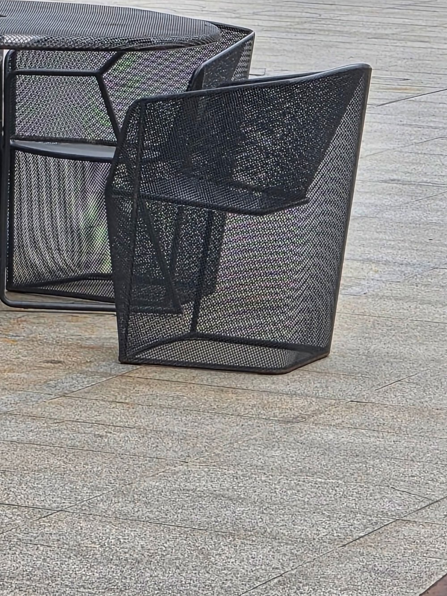

The project began with an effect nobody designed: bands drifting across an outdoor wire-mesh chair.

2.1Observation
Bands appeared on a wire-mesh chair, but belonged to neither layer.
On an outdoor mesh chair, two overlapping mesh layers produced dark bands that drifted as the viewer moved (Figure 2; Video 2).
2.2Why it happens
A small step creates a large shift.
I(x) = tA(x) · tB(x)
Overlapping gratings multiply their transmittances. A slight period mismatch yields a much coarser beat, so a few centimetres of head movement sweeps bands across the whole seat.
2.3From accident to design
Can the bands be designed into an image, one that changes as people move and gives them a reason to stop?
The original effect was accidental. This project asks whether its geometry can be controlled, and whether a responsive image can turn passing into lingering.